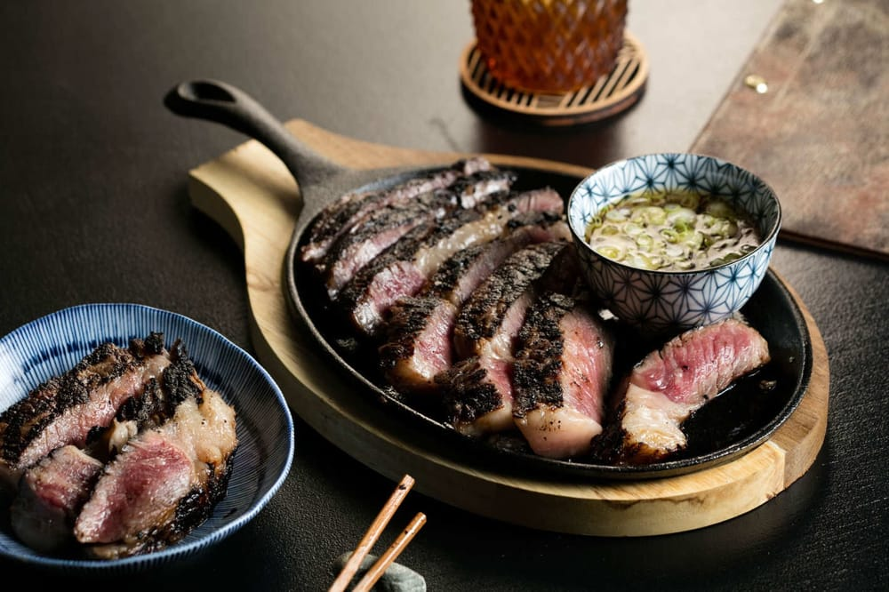
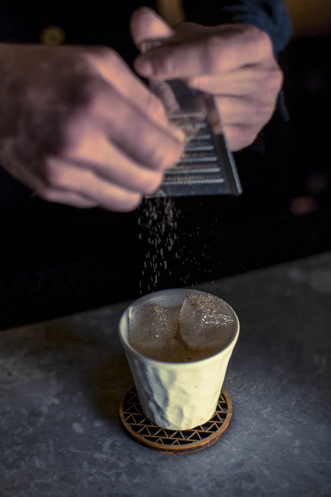
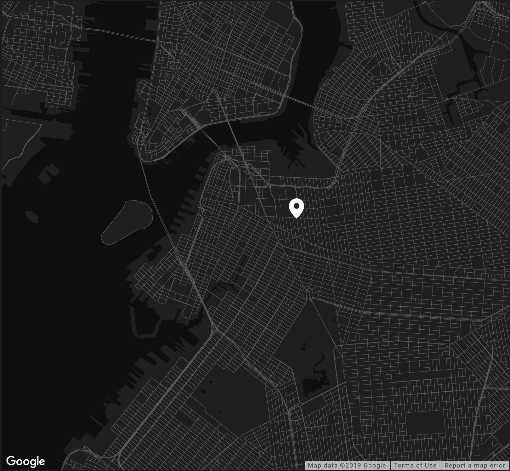
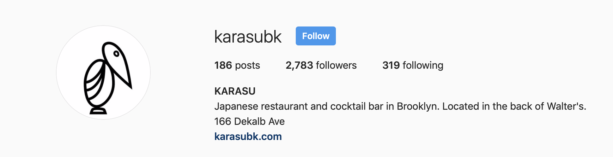
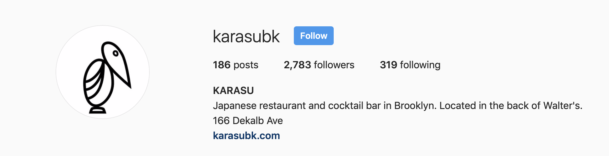

KARASU
I would not mind eating Japanese.



LOCATION
166 Dekalb Ave, Brooklyn, NY 11217
Enter through the back of Walter's

HOURS
Open Daily from 5:30 pm
Sunday - Thursday 5:30 pm - 11 pm
Friday & Saturday 5:30 pm - 12 am
MAKE A RESERVATION
Karasu takes reservations for dinner nightly.
To make a reservation, visit Resy to book online or call us at (347) 223-4811.
The restaurant is also available for private events and large party reservations for up to twelve people.
Please call or email us to learn more.

